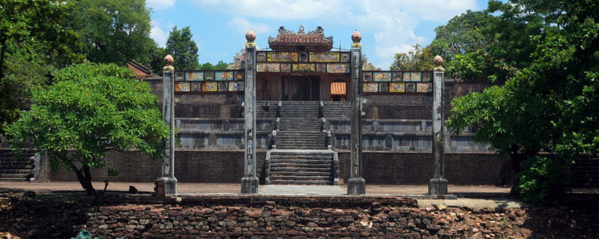

Hệ Thống Lăng Tẩm
Ngày đăng: 7/10/2024 - 10:15
Vị Hoàng đế tài hoa, bạc mệnh
Giới thiệu chung
.jpg)
Lăng Thiệu Trị có tên chữ là Xương Lăng (昌陵) là nơi chôn cất hoàng đế Thiệu Trị. Đây là một di tích trong Quần thể di tích cố đô Huế được UNESCO công nhận là di sản văn hóa thế giới ngày 11 tháng 12 năm 1993.
Thiệu Trị tên là Nguyễn Phúc Miên Tông, con trai trưởng của vua Minh Mạng. Lên ngôi giữa tuổi 34, nhà vua trị vì được 7 năm (1841-1847) thì băng hà, hưởng thọ 41 tuổi. Sinh thời, nhà vua chưa lo nghĩ đến cái chết của mình, phần nữa, không muốn binh dân hao tổn quá nhiều sức lực và của cải nên ông chưa xây cất Sơn lăng. Cho đến lúc chuẩn bị ra đi, nhà vua đã trăn trối với người con trai sắp kế vị rằng: “Chỗ đất làm Sơn lăng nên chọn chỗ bãi cao, chân núi cận tiện, để dân binh dễ công việc. Con đường ngầm đưa quan tài đến huyệt, bắt đầu từ Hiếu Lăng, nên bắt chước mà làm. Còn điện vũ liệu lượng mà xây cho kiệm ước, không nên làm nhiều đền đài, hao phí đến tài lực của binh dân”.
Lịch sử hình thành
Sau khi ở trên ngai vàng được 7 năm, vua Thiệu Trị lâm bệnh mất ngày 4-11-1847, giữa lúc mới 41 tuổi. Sau khi vua Thiệu Trị băng hà, quan tài nhà vua được quàn tại điện Long An trong cung Bảo Định ở bờ bắc Ngự Hà. Xương Lăng vì vậy do vua Tự Đức (con trai vua Thiệu Trị) xây dựng một phần theo ý đồ của vua cha, khác với lăng các vua tiền nhiệm.
Quá trình xây cất lăng diễn ra nhanh chóng và gấp rút, nên chỉ sau ba tháng thi công, các công trình chủ yếu đã hoàn thành. Ngày 14 tháng 06 năm 1848, vua Tự Đức thân hành lên kiểm tra lần cuối công trình và đặt tên là Xương Lăng. Mười ngày sau, thi hài vua Thiệu Trị được đưa vào an táng trong lăng sau 08 tháng quàn tại điện Long An trong cung Bảo Định. Riêng tấm bia“Xương Lăng Thánh Đức Thần Công” mãi đến ngày (19/11/1848) mới được dựng tại nhà Bi Đình. Như vậy lăng vua Thiệu Trị thời gian thi công chưa đầy 10 tháng.
Đặc điểm nổi bật
.jpg)
Đây là lăng duy nhất quay mặt về hướng Tây - Bắc, một hướng ít được dùng trong kiến trúc cung điện và lăng tẩm thời Nguyễn.
Cách lăng 8km về phía trước, ngọn núi Chằm sừng sững được chọn làm tiền án. Dòng sông Hương chảy qua trước mặt làm yếu tố minh đường. Ngay cách chọn “Tả thanh long” và “Hữu bạch hổ” cũng có những nét khác thường: đồi Vọng Cảnh ở bên này sông được chọn làm “rồng chầu”, nhưng “hổ phục” lại là ngọn Ngọc Trản ở bên kia sông. Đằng sau, núi Kim Ngọc xa mờ trong mây được chọn làm hậu chẩm; đồng thời, những người kiến trúc lăng còn đắp thêm một mô đất cao lớn ở ngay sau lăng để làm hậu chẩm thứ hai.
Một nét riêng khác là lăng không có La thành bao quanh. Nếu ở lăng vua Gia Long, La thành bằng gạch được thay thế bởi vô số núi đồi bao quanh như một vành đai tự nhiên, hùng tráng bảo vệ giấc ngủ cho vị tiên đế triều Nguyễn thì ở lăng vua Thiệu Trị, những cánh đồng lúa mượt mà, những vườn cây xanh rờn ở chung quanh được xem là La thành. Chính vòng La thành thiên nhiên đó tạo cho cảnh quan lăng vua Thiệu Trị sự thanh thoát và yên bình.
Tổng thể kiến trúc của lăng Thiệu Trị là sự kết hợp và chọn lọc từ mô thức kiến trúc của lăng Gia Long và lăng Minh Mạng. Xương Lăng giống với Thiên Thọ Lăng ở chỗ đều không có La thành, khu vực lăng mộ và tẩm điện biệt lập, song song với nhau. Xương Lăng lại giống Hiếu Lăng ở cách thức mai táng và xây dựng toại đạo, Bửu Thành hình tròn với hồ Ngưng Thúy hình bán nguyệt bao bọc ở phía trước.
Lăng gồm hai khu vực: lăng và tẩm. Phần lăng nằm ở bên phải, phía trước có hồ Nhuận Trạch thông với hồ Điện ở trước khu tẩm qua một hệ thống cống ngầm và nối với hồ Ngưng Thúy ở trước Bửu Thành, tạo thế “chi huyền thủy” chảy quanh co trong lăng.
.jpg)
Ngay sau hồ Nhuận Trạch là nghi môn bằng đồng đúc theo kiểu “long vân đồng trụ” dẫn vào Bái Đình rộng lớn. Hai hàng tượng đá ở hai bên tả, hữu của sân là tiêu biểu của nghệ thuật tạc tượng đầu thế kỷ XIX ở Huế.
Tiếp theo Bi Đình dạng phương đình là lầu Đức Hinh ngự trên một quả đồi thấp hình mai rùa. Các nhà thiết kế lăng Thiệu Trị đã tách riêng khu vực tẩm điện trong lăng Minh Mạng rồi cải tiến, sửa đổi cho phù hợp với cảnh quan của Xương Lăng để tạo ra đồ án thiết kế lăng này. Chính vì thế mà Bi Đình và lầu Đức Hinh ở Xương Lăng mang dáng vóc của Bi Đình và Minh Lâu ở lăng Minh Mạng. Đứng trên lầu Đức Hinh, phóng tầm mắt ra phía sau sẽ thấy một cảnh quan trác tuyệt. Hồ Ngưng Thúy như vầng trăng xẻ nửa án ngữ trước Bửu Thành. Bên trên hồ có 3 chiếc cầu: Đông Hòa (phải), Chánh Trung (giữa) và Tây Định (trái), dẫn đến bậc tam cấp vào Bửu Thành - nơi đặt thi hài của nhà vua. Xa hơn về phía phải của lăng có gác Hiển Quang - nơi nghỉ ngơi, suy tưởng của nhà vua ở cả cõi âm lẫn cõi dương.
Có lẽ do yếu tố địa lý không cho phép kiến tạo Xương Lăng theo một trục dọc như Hiếu Lăng nên khu vực điện thờ được xây dựng riêng, cách lầu Đức Hinh 100m về phía trái. Ngay sau hồ Điện có một nghi môn bằng đá cẩm thạch, bên trên là những liên ba và một bầu Thái cực hình nậm rượu bằng pháp lam, trang trí hoa lá vui mắt và sinh động. Bức hoành phi nằm giữa những hoa văn trang trí với 4 chữ Hán: “Minh đức viễn hỷ” (Đức sáng cao xa vậy!) như muốn ghi mãi vào không trung tài đức của nhà vua.
.jpg)
Bước lên tam cấp dẫn vào khu vực điện Biểu Đức, du khách sẽ đi qua Hồng Trạch Môn nhìn về phía Bắc, một dạng vọng lâu như Hiển Đức Môn (ở lăng Minh Mạng) và Khiêm Cung Môn (ở lăng Tự Đức sau này). Chính giữa là điện Biểu Đức, nơi thờ cúng bài vị của vua và Hoàng hậu Từ Dũ. Trong chính điện, trên những cổ diêm ở bộ mái và ở cửa Hồng Trạch, du khách sẽ đọc được hơn 450 ô chữ chạm khắc các bài thơ có giá trị về văn học và giáo dục. Các công trình phụ thuộc như Tả, Hữu Phối Điện (trước), Tả, Hữu Tùng Viện (sau) quây quần chung quanh điện Biểu Đức càng tôn thêm vẻ cao quý.
Vị trí
Làng Cư Chánh, xã Thủy Bằng, thành phố Huế.
LIÊN HỆ ĐỂ ĐẶT TOUR: